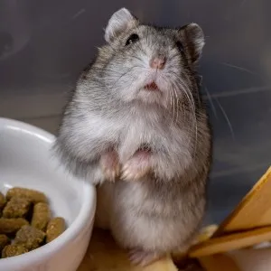

Para melhorar a vida do hamster é necessário que ele tenha algo para roer, já que seus dentes nunca param de crescer, além disso, a limpeza do habitat dele precisa ser feito semanalmente, prevenindo doenças, pó no fundo da gaiola e até mesmo o mau cheiro, nesse momento é preciso também retirar os excessos de alimentos velhos para que ele não coma e acabe por adoecer em virtude disso.

Eduardo
Eduardo
Anão russo: Como o próprio nome já sugeri, esses hamsters são menores do que o normal, essa espécie fofinha tem ganhado cada vez mais fama, começaram a ser amplamente procurados como animais de estimação, por isso vamos falar um pouquinho sobre esses pequenos.